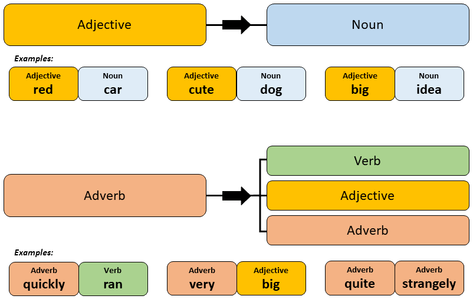

Adverbs
Grammar and Sentence Structures
The following table summarises the mandatory grammar and sentence patterns used with adverbs
| Turning adjectives into adverbs | |
| い Adjective Examples | な Adjective Examples |
| 小さいく | しずかに |
| finely ("small-ly"). | quietly ("quiet-ly"). |
| Using adverbs in sentences | |
|
Adverbs require no further particles and should be added into the sentence before the word the adverb is describing. The following image highlights the differences between an adjective and an adverb and their use cases:  Image taken from: 8020japanese |
|
Table of Common Vocabulary
Customise Columns
| English | Hiragana | Kanji | Main Category | Secondary Category | Notes |
|---|---|---|---|---|---|
| a little, a bit | すこし | 少し | Degree Adverb | Frequency Adverb | |
| a little, a bit | ちょっと | Degree Adverb | Frequency Adverb | ||
| a lot (quantity) | いっぱい | Degree Adverb | - | ||
| absolutely; definitely | ぜったい | 絶対 | Focusing Adverb | - | |
| actually; really; truly | じっさいに | 実際に | Focusing Adverb | - | |
| after a few years | すうねんご | 数年後 | Time Adverb | ||
| all, everything | ぜんぶ | 全部 | Degree Adverb | - | |
| alone, by oneself | ひとりで | 一人で | Manner Adverb | - | |
| already | もう | Time Adverb | - | ||
| always | いつも | Frequency Adverb | - | ||
| automatically | じどうてきに | 自動的に | Manner Adverb | - | |
| besides | ほかに | 他に | Conjunctive Adverb | - | |
| certainly; by all means | ぜひ | Focusing Adverb | - | ||
| clearly | はっきり; はっきりと（は） | Manner Adverb | |||
| continously; for quite some time | ずっと | Time Adverb | Manner Adverb | ||
| currently | げんざい | 現在 | Time Adverb | - | |
| far, distant | とおく | 遠く | Distance | - | use this form + の before a noun |
| first of all | まず | Time Adverb | - | ||
| firstly | はじめに | 初めに | Time Adverb | ||
| for the first time | はじめて | 初めて | Manner Adverb | - | |
| generally; mostly; approximately | だいたい | 大体 | Degree Adverb | ||
| greatly | すごく | Degree Adverb | - | ||
| however (used to refer to different means) | どうでも | Manner Adverb | - | ||
| in succession; one after another | つぎつぎ | 次々 | Time Adverb | ||
| just before | さっき | Time Adverb | |||
| lots, many | たくさん | Degree Adverb | - | ||
| not at all (with negative verb) | ぜんぜん | 全然 | Degree Adverb | - | |
| not really (with negative verb) | あまり | 余り | Degree Adverb | - | |
| number of times; numerous times | なんど | 何度 | Time Adverb | - | |
| of course | もちろん | Conjunctive Adverb | Focusing Adverb | ||
| often (can also mean well) | よく | Frequency Adverb | - | ||
| one time | いちど | 一度 | Time Adverb | - | |
| originally, from the start | もともと | 元々 | Time Adverb | - | |
| Particularly, | とくに | 特に | Focusing Adverb | - | |
| properly | ちゃんと | Manner Adverb | - | ||
| really | ほんとうに | 本当に | Degree Adverb | - | |
| recently; most recently | さいきん | 最近 | Time Adverb | ||
| separately (eg: paying separately) | べつべつ | 別々 | Manner Adverb | - | |
| sometime | いつか | Time Adverb | |||
| sometimes | ときどき | 時々 | Frequency Adverb | - | |
| soon | すぐに | Time Adverb | - | ||
| straight ahead | まっすぐ | 真っ直ぐ | Place Adverb | - | |
| suddenly | きゅうに | 急に | Time Adverb | ||
| super (slang) | ちょう | 超 | Degree Adverb | - | |
| the most | もっとも | 最も | Degree Adverb | ||
| this next time | こんど | 今度 | Time Adverb | - | |
| together | いっしょに | 一緒に | Manner Adverb | - | |
| very | とても | Degree Adverb | - | ||
| walk, on foot (means) | あるいて (no particle) | 歩いて | Manner Adverb | - | |
| well (can also mean often) | よく | Adverb | - | ||
| whatever | なんでも | 何でも | - | - | |
| whenever | いつでも | Time Adverb | - | ||
| wherever | どこでも | Place Adverb | - | ||
| whichever | どちらも | - | - | ||
| whoever | だれでも | People | - | ||
| whole life | いっしょう | 一生 | Time Adverb | ||
| with all one's heart | おもいきり | 思い切り | Manner Adverb | ||
| with all one's might, as hard as one can | いっしょうけんめい | 一生懸命 | Manner Adverb | - |